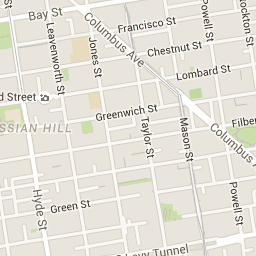

Powered by:
Walk Score
94
out of 100
Walker’s Paradise
Restaurants:
Zarzuela
.1mi
Coffee:
Blue Cafe
.2mi
Bars:
International Sports Club
.3mi
Groceries:
Maria Manetti Farrow Est Llc
.1mi
Parks:
George Sterling Memorial
.03mi
Schools:
Yick WO Elementary School
.2mi
Shopping:
Anica boutique
.2mi
Entertainment:
Online Art Consignment Gallery
.1mi
More Places:
Go
Bigger map
Street View...
Google Map
Street View
Satellite
Walkability Map
15 Minute Walk
Nearby Photos

Use two fingers to move the map
Map Data
Map data ©2016 Google
Map Data
Map data ©2016 Google
Map data ©2016 Google
Terms of Use
Report a map error
Get Walk Score